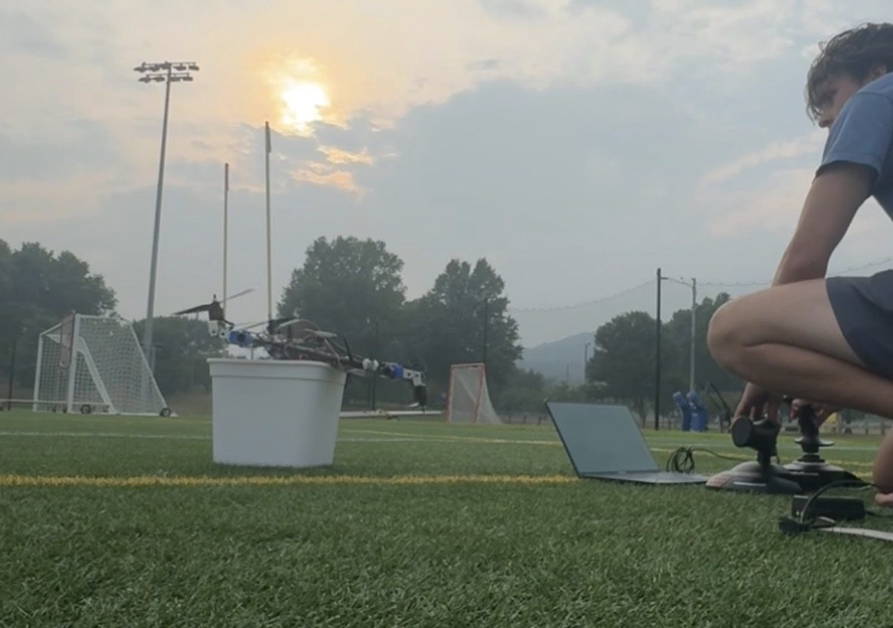
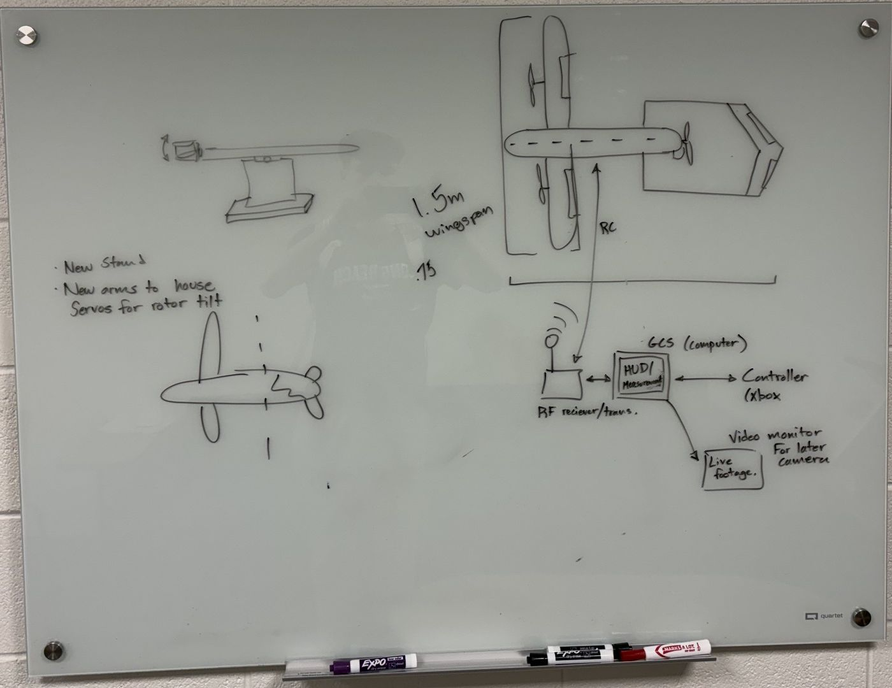
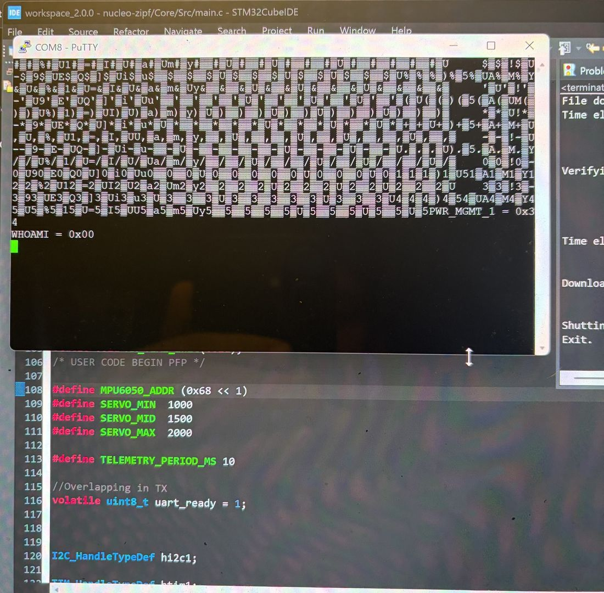
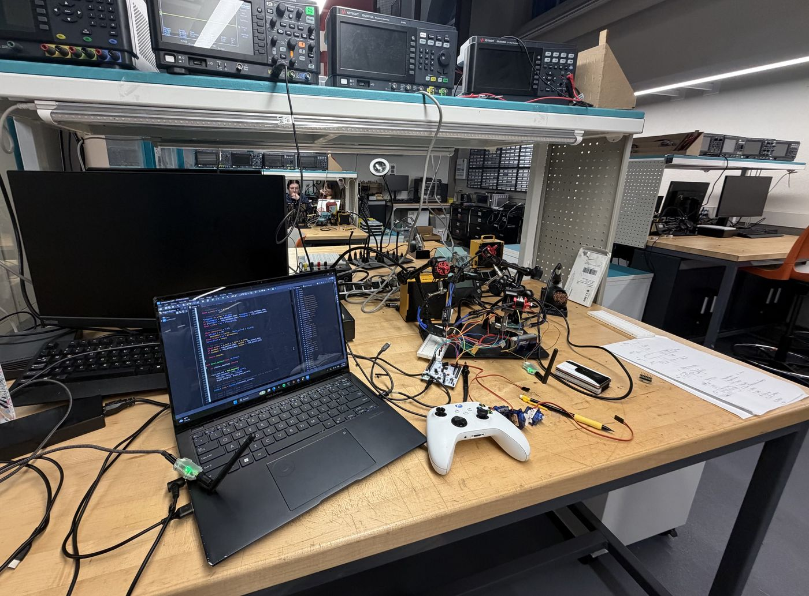
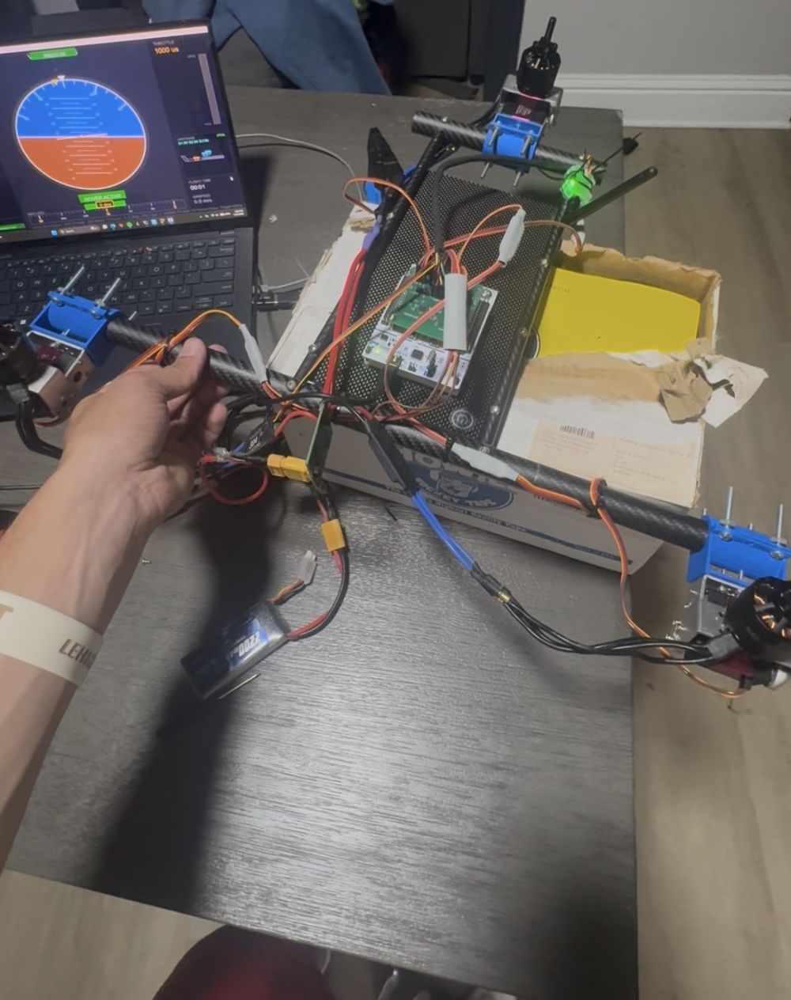
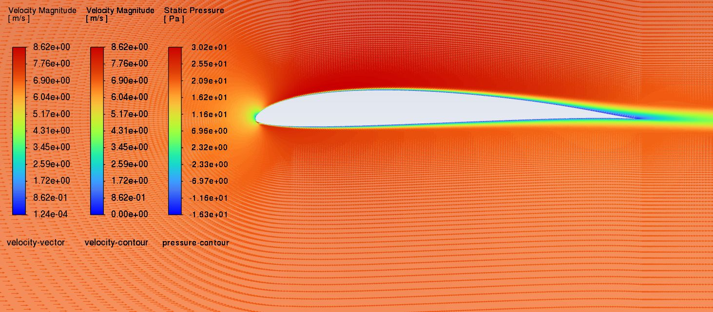
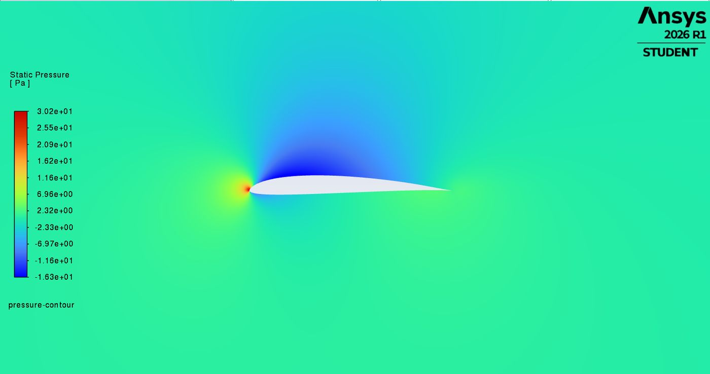
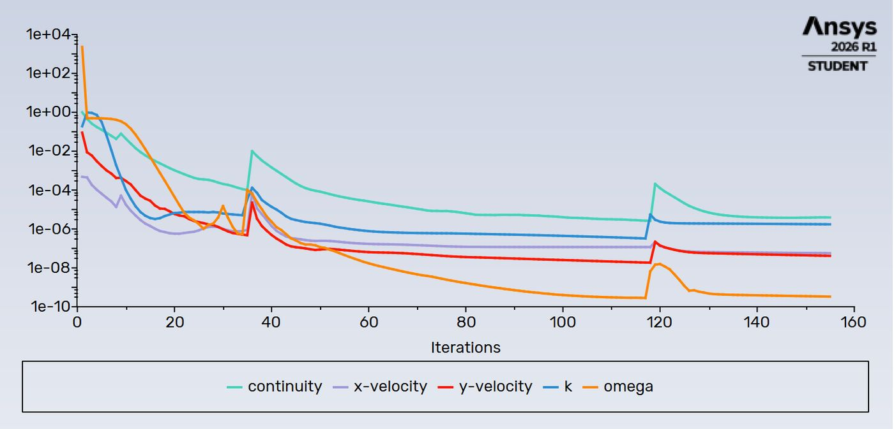

Lehigh rocket club
Liquid rocket motor test stand
Helped set up the transducers and load cell on the club's liquid rocket motor test stand, with some work on the DATAQ DI-2108 data acquisition unit.
Electrical Engineering · Lehigh University
EE student and NCAA Division I athlete. I build flight hardware: flight controllers, power distribution, telemetry links and the airframes they fly in.
Independent project · In progress
A fixed-wing drone built for 1 to 1.5 hour flights that takes off and lands vertically. Three rotors tilt from hover to forward flight. I designed the concept, wrote the flight firmware on an STM32, soldered the flight controller and power board, built a ground station, and ran CFD to choose the airfoil.

The aircraft started on a whiteboard: a 1.5 m wing with two tilting rotors, a third rotor at the tail, and an inverted-V tail on a single boom. The same sketch lays out the ground link, from the RF transceiver to a laptop ground station with a HUD, an Xbox controller for input, and a video monitor for a camera added later.
The next revision added a new test stand and new arms that house the servos for rotor tilt.

Getting the flight controller and ground station to talk over the LR900 radios took a lot of trial and error. The firmware sends a telemetry packet every 10 ms over UART to the radio, and the ground station decodes it as MAVLink.
Debugging: early runs printed garbled bytes on the serial console and the MPU-6050 answered its WHO_AM_I register with 0x00, which meant the I²C read was failing before any flight data could be trusted.

I hand-soldered the flight controller board and the power distribution board that feeds the motor ESCs, then brought the system up on the lab bench. An Xbox controller, read by the ground station, set motor speed so I could test the whole chain from stick to prop.
The same firmware runs the hover PID loop, with integral and output limits to keep the motors in a safe range.

The first airframe uses carbon fiber tubes with 3D-printed mounts that hold the motors and the tilt servos. All the electronics from the bench, including the flight controller, power board and radio, moved onto the frame.
The ground station HUD shows attitude, throttle in microseconds, hover mode status, flight time and airspeed, all live over the telemetry link.

I simulated candidate airfoils in 2D with a steady, pressure-based solver and the SST k-ω turbulence model, then compared lift and drag coefficients. An early run threw negative-k warnings in thousands of cells. After fixing the setup, the final run converged cleanly, with residuals falling more than five orders of magnitude and both coefficients holding flat.



Lehigh rocket club
Helped set up the transducers and load cell on the club's liquid rocket motor test stand, with some work on the DATAQ DI-2108 data acquisition unit.
Internship · PennPak Solutions